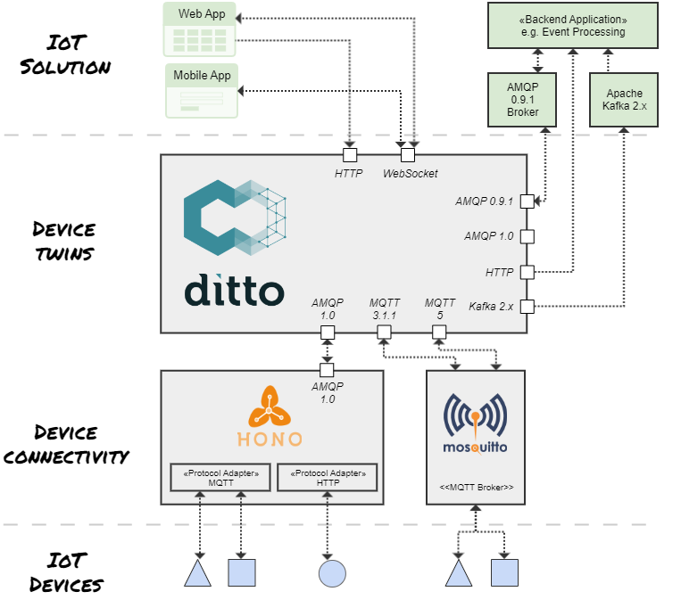

Eclipse Ditto™
and
W3C Web of Things (WoT)
10/2022
Digital Twins
- digital representation of physical devices
- twin as broker for communicating with assets
- applicable for both industrial and consumer-centric IoT scenarios
Twins in scope of Ditto
- a pattern for working with things in the IoT
- provide state persistence and search capabilities
- access twins always in an authorized way
- provide APIs - Device as a Service
- optionally normalize device payloads
Eclipse Ditto in context

Ditto as
Digital Twin
"middleware"
turn device data into APIs
{
"thingId": "io.foo:car1",
"policyId": "io.foo:car1",
"attributes": {
"manufacturer": "Foo",
"data": {
"serialNo": 4711
}
},
"features": {
"temp": {
"properties": {
"value": 23.42
}
}
}
}JSON repr. of a Thing
GET/PUT/DELETE /api/2/things/io.foo:car1
/api/2/things/io.foo:car1/thingId
/api/2/things/io.foo:car1/policyId
/api/2/things/io.foo:car1/attributes
/api/2/things/io.foo:car1/attributes/manufacturer
/api/2/things/io.foo:car1/attributes/data
/api/2/things/io.foo:car1/attributes/data/serialNo
/api/2/things/io.foo:car1/features
/api/2/things/io.foo:car1/features/temp
/api/2/things/io.foo:car1/features/temp/properties
/api/2/things/io.foo:car1/features/temp/properties/value
HTTP API of the Thing
→ docsmodeling thing capabilities
- by default, thing attributes and feature properties are "schemaless"
- a thing may be aware of one "definition"
- a feature may be aware of several "definitions" linking to models
{
"thingId": "io.foo:lamp-1",
"policyId": "io.foo:lamp-1",
"definition": "https://some.domain/floor-lamp-1.0.0.tm.jsonld",
"attributes": {
"Manufacturer": "Foo corp",
"serialNo": "4711"
},
"features": {
"Spot1": {
"definition": [
"https://some.domain/dimmable-colored-lamp-1.0.0.tm.jsonld",
"https://some.domain/colored-lamp-1.0.0.tm.jsonld",
"https://some.domain/switchable-1.0.0.tm.jsonld"
],
"properties": {
"on": true,
"color": {...
}
}
}
}
}persistence of device state
- devices are not always connected to the net
- applications always need to be able to access their data
- twin vs. live access on API level


search
- you must not
- Ditto has you covered
GET /api/2/search/things
?filter=like(attributes/manufacturer,"Foo*")GET /api/2/search/things
?filter=and(
eq(features/*/definition,"https://some.domain/switchable-1.0.0.tm.jsonld"),
like(attributes/manufacturer,"Foo*"),
not(gt(attributes/counter,42))
)
&fields=thingId,attributes/manufacturer,features/*/properties/on- search for arbitrary data with RQL query
- Ditto again ensures authorization
- apply field projection over the results
- don't worry about indexing
Eclipse Ditto +

The what:
Let Ditto provide WoT TDs via Digital Twin APIs
by referencing to WoT TMs in Ditto "things"
The why: benefits for a WoT approach
- devices do not need to "know" their TD or be able to provide it by themselves
- deliver TDs for simulated twins
- "retrofit" already connected devices with TDs - enabling "brownfield" scenarios
- Ditto abstracts on how devices are connected - provided Protocol Binding: HTTP vocabulary
The why: benefits for Ditto and the digital twin pattern
- Ditto managed things were "schemaless" until now - now a schema can be defined
- using HTTP content negotiation, digital twins can be "introspected" asking for their capabilities
- Ditto users will benefit from future tooling around the WoT standard
The how: generation of WoT TDs based on referenced TMs
- Ditto downloads and caches referenced TMs during runtime
- resolving extensions via
tm:extendsand imports viatm:ref, Thing level compositions viatm:submodeland TM placeholders - Ditto generates TDs, injecting forms with HTTP API endpoints
curl -u ditto:ditto \
'https://ditto.eclipseprojects.io/api/2/things/io.eclipseprojects.ditto:floor-lamp-0815' \
-H 'Accept: application/td+json'{
@context":["https://www.w3.org/2022/wot/td/v1.1", ...],
"title":"Floor Lamp",
"@type":"Thing",
"id":"urn:io.eclipseprojects.ditto:floor-lamp-0815",
"base":"https://ditto.eclipseprojects.io/api/2/things/io.eclipseprojects.ditto:floor-lamp-0815",
"version":{"model":"1.0.0","instance":"1.0.0"},
"links":[{
"rel":"type",
"href":"https://eclipse-ditto.github.io/ditto-examples/wot/models/floor-lamp-1.0.0.tm.jsonld",
"type":"application/tm+json"
},{
"rel":"item",
"type":"application/td+json",
"href":"/features/Spot1"
},...],
"security":"basic_sc",
"securityDefinitions":{"basic_sc":{"in":"header","scheme":"basic"}},
"forms":[{"op":"readallproperties","href":"/attributes{?channel,timeout}","htv:methodName":"GET","contentType":"application/json"
...
}The how: upon creation of new Things, generation of a "JSON skeleton" following the WoT TM
curl -X PUT -u ditto:ditto \
'https://ditto.eclipseprojects.io/api/2/things/io.eclipseprojects.ditto:floor-lamp-0815' \
-H 'Content-Type: application/json' \
--data-raw '{
"definition": "https://eclipse-ditto.github.io/ditto-examples/wot/models/floor-lamp-1.0.0.tm.jsonld"
}'{
"thingId": "io.eclipseprojects.ditto:floor-lamp-0815",
"policyId": "io.eclipseprojects.ditto:floor-lamp-0815",
"definition": "https://eclipse-ditto.github.io/ditto-examples/wot/models/floor-lamp-1.0.0.tm.jsonld",
"attributes": {
"manufacturer": "",
"serialNo": "https://some.domain/switchable-1.0.0.tm.jsonld"
},
"features": {
"Spot1": {
"definition": [
"https://eclipse-ditto.github.io/ditto-examples/wot/models/dimmable-colored-lamp-1.0.0.tm.jsonld",
"https://eclipse-ditto.github.io/ditto-examples/wot/models/colored-lamp-1.0.0.tm.jsonld",
"https://eclipse-ditto.github.io/ditto-examples/wot/models/switchable-1.0.0.tm.jsonld"
],
"properties": {
"dimmer-level": 0.0,
"color": {
"r": 0,
"g": 0,
"b": 0
},
"on": false
}
...Demo

Links
- Ditto Blogpost about WoT integration
- Ditto docs about WoT integration
- GitHub - please give us a star ;)
- Chatroom to ask more questions